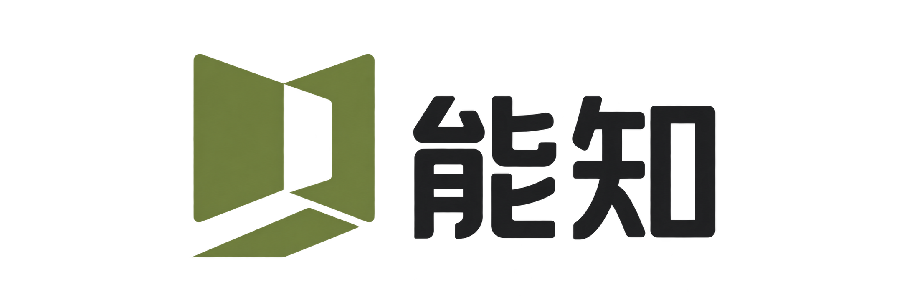

现有参数 · 重排示意CURRENT
从文章中，找到有据可查的答案。
储能系统的长期价值，不只取决于初始效率，还需要结合运行工况、循环寿命与维护成本进行判断。每一项结论，都应回到原文核实。
资料来源 · 文章知识库 / 最近同步于 12 分钟前
已完成辅助说明
保留能知的橄榄绿品牌基因，用更好的字阶、对比度与色彩分工，建立专业感。
储能系统的长期价值，不只取决于初始效率，还需要结合运行工况、循环寿命与维护成本进行判断。每一项结论，都应回到原文核实。
资料来源 · 文章知识库 / 最近同步于 12 分钟前
储能系统的长期价值，不只取决于初始效率，还需要结合运行工况、循环寿命与维护成本进行判断。每一项结论，都应回到原文核实。
资料来源 · 文章知识库 / 最近同步于 12 分钟前
#24312B#425C3B#59675E#F6F7F4#DFF16E大面积使用白与暖灰；绿色只承担品牌、交互和少量强调。
统计数字回归墨色，不让每一个数值都争夺注意力。

知识助手判断一种储能技术是否合适，需要把性能指标放回具体场景，而不是只比较某一项参数。可以从以下三个维度展开。
明确储能时长、充放电频次与响应速度。不同场景对功率、容量和系统灵活性的要求并不相同。1
除了初始投入，还要综合考虑效率损耗、衰减、更换及维护成本，避免将购置成本等同于实际使用成本。2
结合部署环境，评估热管理、系统集成与运维条件，再确定技术路线的适用边界。1
继续追问，让问题更深入…
回答由知识库内容生成，请结合原文核实重要信息。
管理内容来源与自动同步任务
凭证仅用于文章同步；已保存的密钥不会回显。
| 名称 | 同步频率 | 已入库 / 接口总数 | 状态 | 最近同步 | 操作 |
|---|---|---|---|---|---|
| 新能源产业文章 nyzdata · 文章 API | 每 6 小时 | 8,640 / 8,640 | 运行中 | 12 分钟前 | 立即同步 |
| 储能技术研究 nyzdata · 文章 API | 每 12 小时 | 3,286 / 3,560 | 运行中 | 34 分钟前 | 查看进度 |
| 产业政策观察 nyzdata · 文章 API | 每天 | 920 / 920 | 已暂停 | 昨天 18:30 | 恢复同步 |
已同步 3,286 / 3,560 篇 · 正在读取文章内容
新增 24 篇 · 内容已入库
上次请求超时 · 请检查接口后重试
文章入库后由后台任务完成清洗、切片与向量化，可在「文档管理」中查看处理状态。
本页名称、计数、时间及任务记录均为设计示例，不代表实际业务数据。